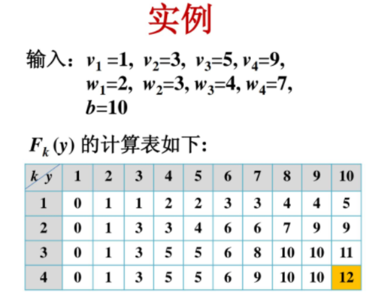
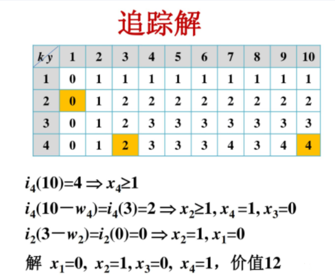
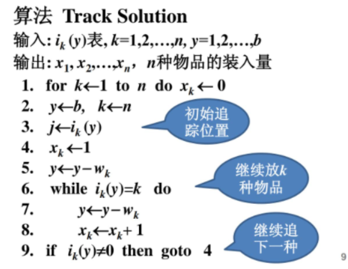

算法分析与设计（屈婉玲）——课程学习笔记
算法分析与设计（屈婉玲）
动态规划算法
背包问题
一个旅行者随身携带了一个背包，有n件物品可以放入背包，每件物品的重量和价值分别为\(w_i , v_i\) ，背包的容量为b。
怎么装物品，能使物品重量不超过背包总重量的前提下，价值最大？
请给出最佳装配方案解的向量。
问题建模：
解集向量：
\(<x_1,x_2,x_3...x_n>\)其中，\(x_i, 1 \leq i \leq n\)表示第i件物品装了\(x_i\)件。
目标函数：
总价值： \(max\sum^{i \to n}_{i = 1}{v_ix_i}\)
限制：$^{i n}_{i = 1}{w_ix_i} b ， x_i N $
由此可见，两个函数都是线性规划问题。
解题步骤
子问题的界定与递推顺序：
子问题的界定：
给定两个参数k，y \((1 \leq k \leq n , 1 \leq y \leq b 且 k,y \in Z_+)\)，分别表示物品与背包的递推参数。
递推顺序：
k：1,2,3,4,5... n
对于给定的k，
y：1,2,3,4...b
递推方程：
给定一个函数：\(F_k(y)\) 含义是：背包容量为y的时候，装前k种物品（装到第k种物品）的时候，最大价值是多少。
\(F_k(y) = max\lbrace F_{k-1}(y), F_k(y - w_k) + v_k \rbrace\)
这个式子怎么得来的呢？
递推过程中，对于一件物品无外乎只有两种情况，放它或者不放它。
假如不放入它，那说明k这个物品没装，装的是前k-1种物品，那就直接借助上一层规划得到的结果即可。
假如我要放入这个物品一件，拿当前背包的重量减去这个物品的重量，这是当前背包所剩的重量 \(y - w_k\)，那么前面的递推过程中，一定得出了“当前所剩重量”装物品的最大价值\(F_k(y - w_k)\) 加上当前的物品价值，就是加入当前物品的总价值。
边界初始化：
\(F_0(y) = 0 没有物品可装\)
\(F_k(0) = 0 包里没有空间\)
\(F_k(y) = -\infty 解决超重情况的取最大值问题\)
标记函数（问题需要解向量的时候，这一步必不可少）：
\(i_k(y)\)：装前k种物品，总重不超y,背包达到最大价值时装入物品的最大标号（装到第几个物品处） \[ i_k(y) = \begin{cases} i_{k-1}(y),& F_{k-1}(y) > F_k(y - w_k) + v_k，不装这个物品是最优的\\ k, & F_{k-1}(y) \leq F_k(y - w_k) + v_k, 装这个物品是最优的 \end{cases} \]
时间复杂度分析：
根据公式：\(F_k(y) = max\lbrace F_{k-1}(y), F_k(y - w_k) + v_k \rbrace\) 可得，dp数组（记录数组）要计算nb个\(F_k(y)\)的值。
计算时间为O(nb).
伪多项式时间算法：
时间为参数b和n的多项式，不是输入规模的多项式.参数b是整数，表达b需要logb位,输入规模是log b .
笔者关于这一块不是很懂······，好像背包问题是NP-hard问题，然后输入的b其实是 数值大小。。。 然后是\(2^b\)复杂度，不懂···
案例一：


追踪标记的伪码：

背包问题推广：
- 0-1背包
- 多重背包